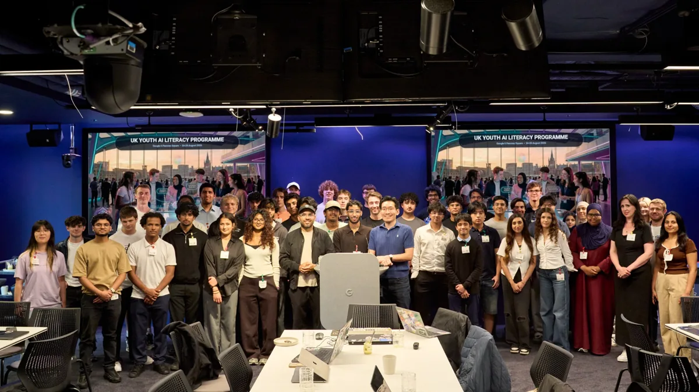
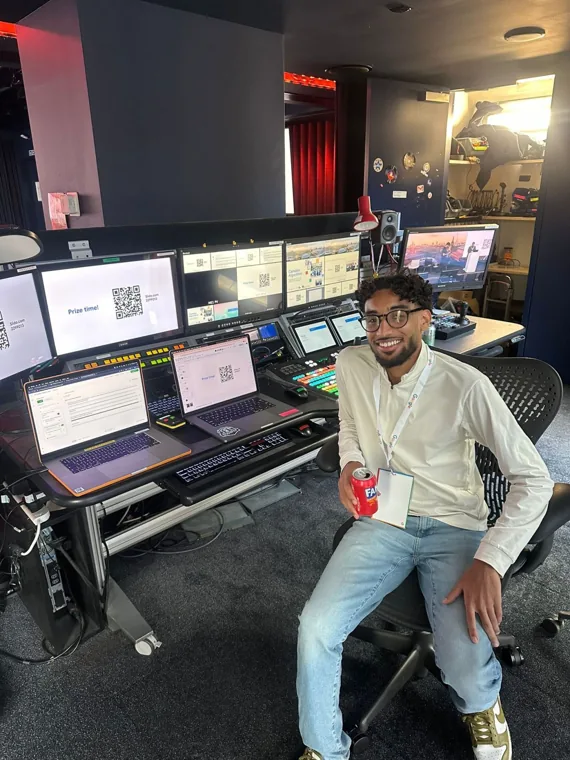
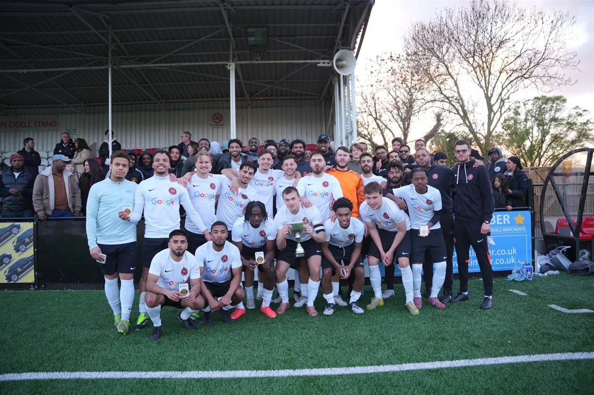
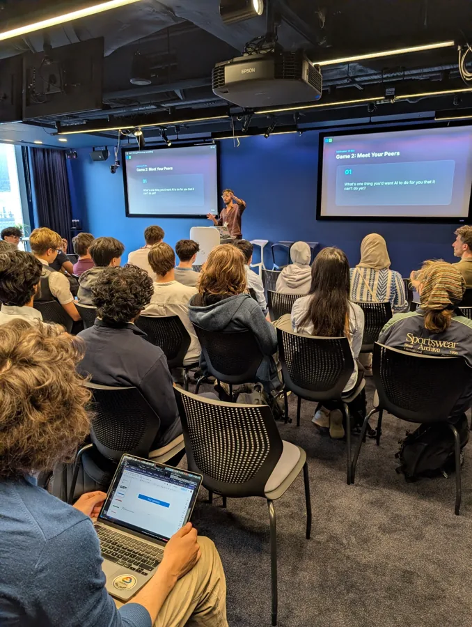
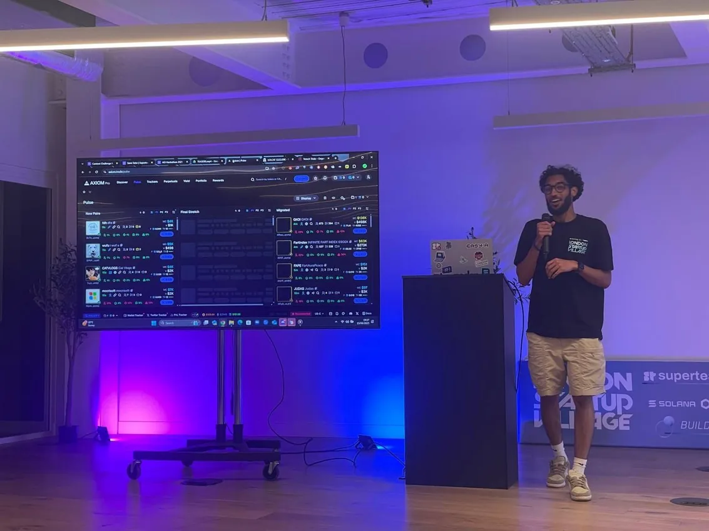
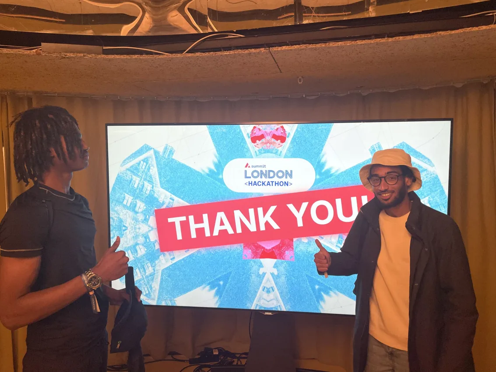
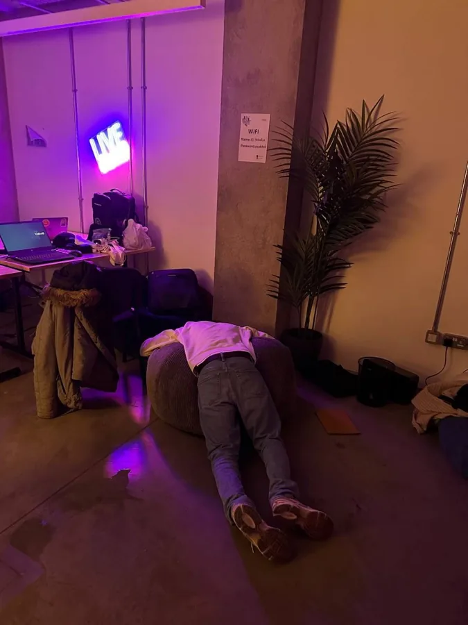
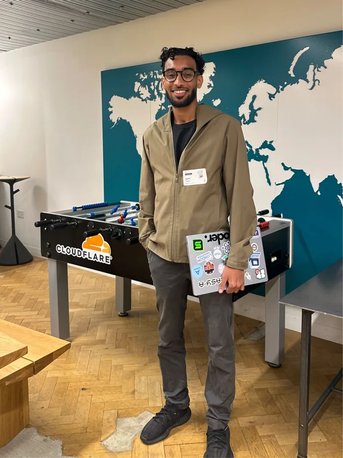
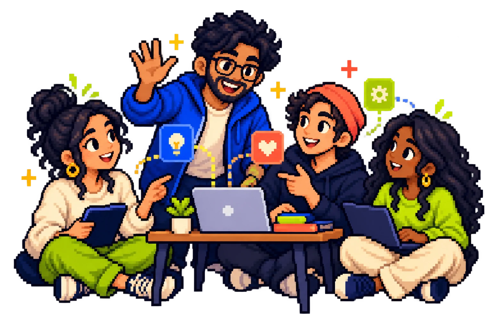

YOUTH + AI
UK Youth AI Literacy
Nearly 700 applications in under 12 hours. Fifty students joined the first pilot at Google.
In collaboration with Google DeepMind, BBC R&D and the University of Cambridge.
Learn moreCOMMUNITY / GROWTH / CREATOR
Across AI, tech, content and grassroots spaces, I create connections and help good ideas grow.
From King’s Cross, building with people everywhere.
SELECTED WORK / 001
Projects and communities that create opportunity, confidence and connection for young people.

Nearly 700 applications in under 12 hours. Fifty students joined the first pilot at Google.
In collaboration with Google DeepMind, BBC R&D and the University of Cambridge.
Learn more
Helped bring 240+ young people into Google’s London HQ for an AI education event.
Learn more
Sharing the people and stories behind a local football club. United by more than football.
Learn moreTHE PERSON BEHIND THE PIXELS / 002
I grew up in King’s Cross. Community is where I learned that access changes what people imagine for themselves. Today I connect young people to AI, education and the people who can open doors.
I build the invitation, help people feel they belong in the room, and make sure the momentum carries beyond one event.
I also create short videos as @sxmi.ai, making AI feel approachable for the next generation.
Let’s build something together
THE AI EXCHANGE / 003
Advisory Board member · The AI Exchange
The AI Exchange is Google DeepMind’s public space at Platform 37, created for people to learn about AI and discuss its impact through free educational programmes, interactive exhibitions and cultural events.
On the Advisory Board, I help shape strategic decisions for the space’s launch, bringing a local and youth perspective to its programming and community engagement.
Read Google’s announcementBUILD / MEET / REPEAT / 004
More than 51 events, countless new people and plenty of late nights building together.
I turn up to learn, make things with new teams and share what we discover. I’ve picked up wins and placements along the way, but the best part is the community that carries on afterwards.
51+HACKATHONS



HOW IT HAPPENED / 005
Different rooms. The same belief that people deserve a way in.
I led youth engagement and the organic recruitment campaign for a national AI literacy programme with Google DeepMind, the University of Cambridge and BBC R&D. The pilot selected 50 students and brought them together with 50+ Google volunteers.
~700 applications / <12 hoursOn the steering committee, I helped shape an AI education event with Google and Havas that welcomed more than 240 young people into Google’s London HQ.
240+ young peopleAs a volunteer leading digital and media for my local club, I focus on the people who make grassroots football matter and the connections it creates across Camden.
United by more than footballNEXT LEVEL / 006
Let’s talk community, youth engagement, AI literacy, content or your next big idea.
+44 7867 980616